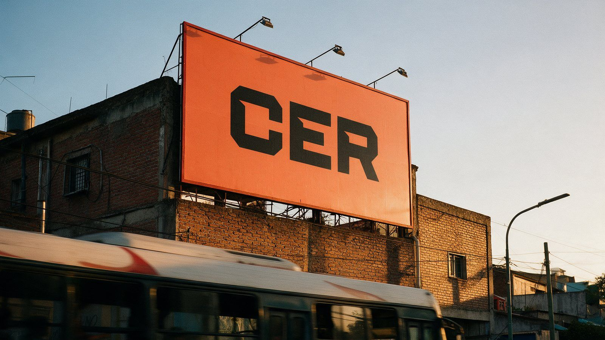
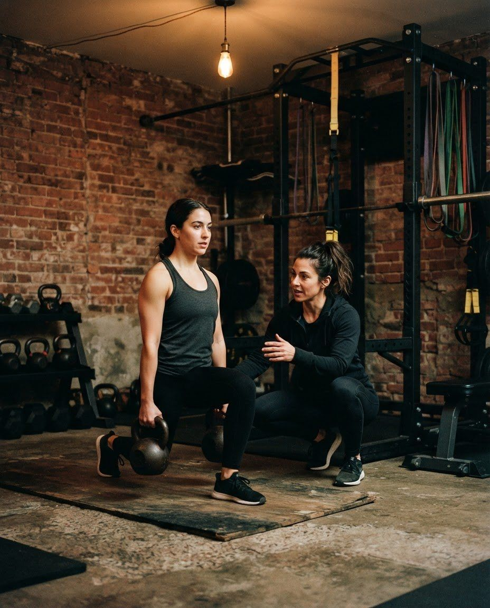
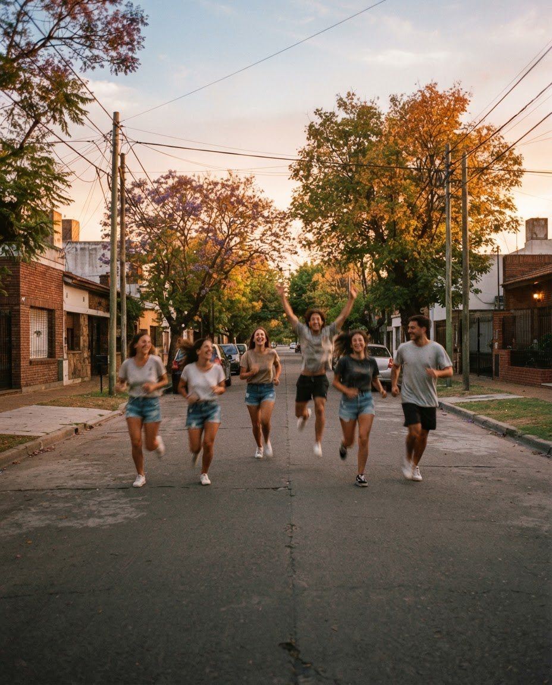
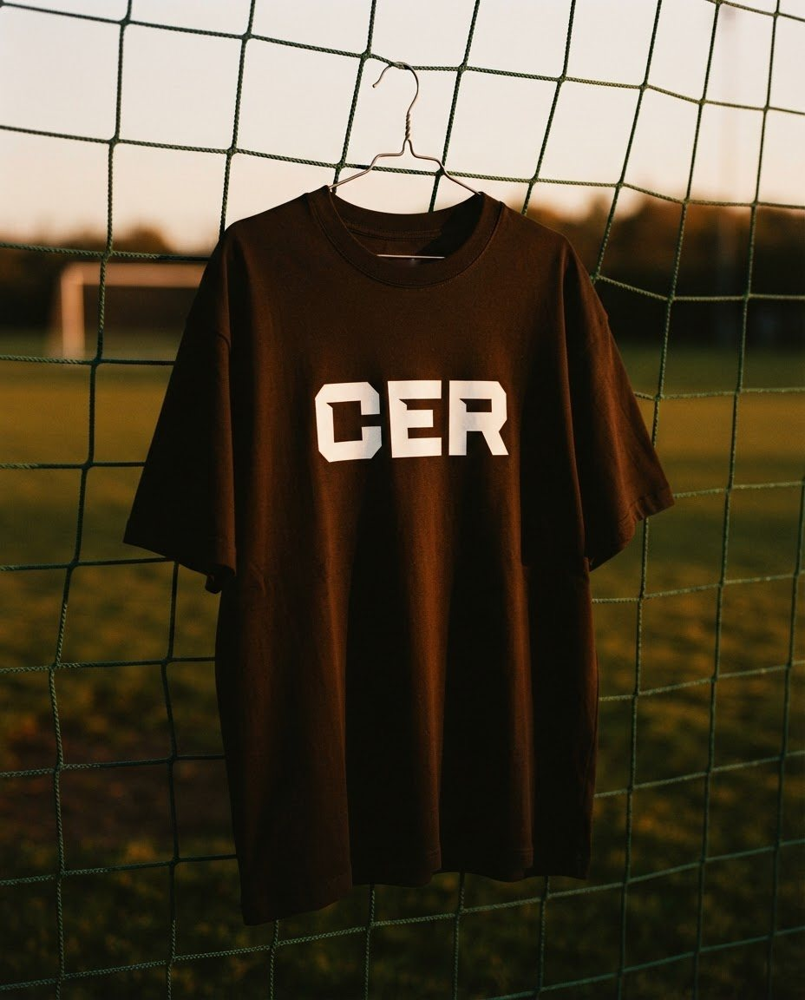
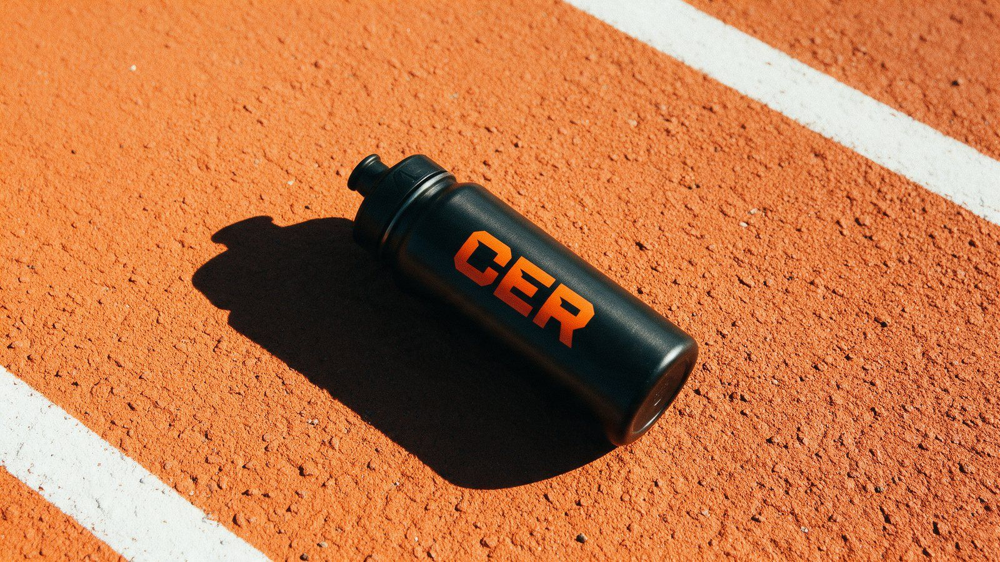
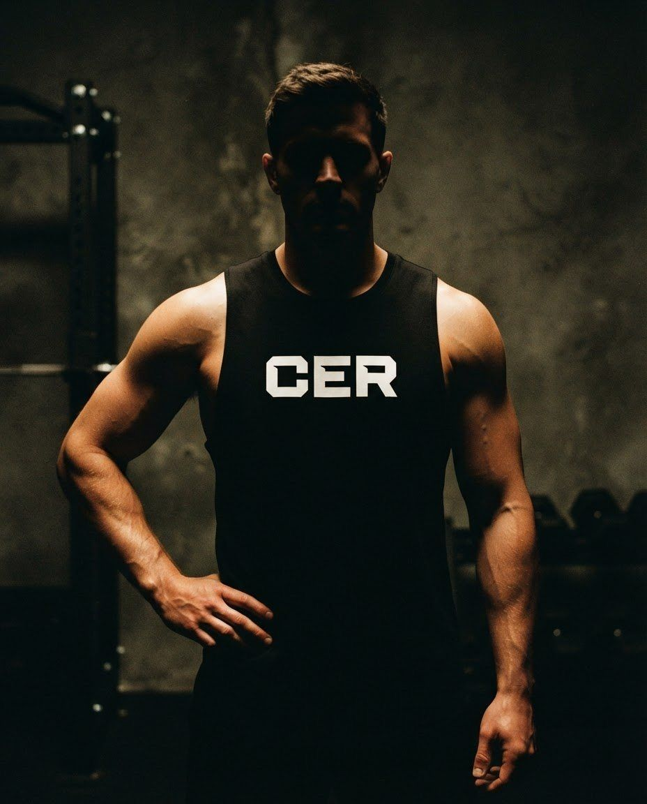
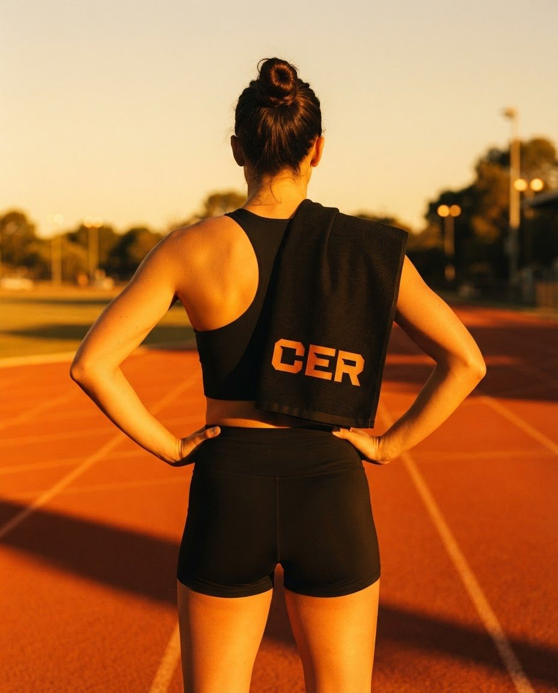
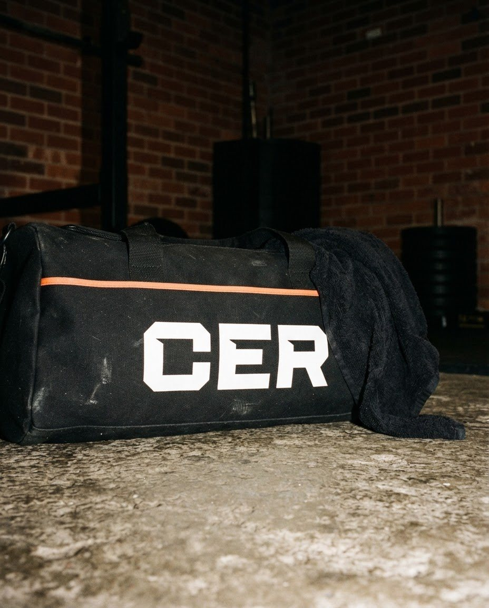
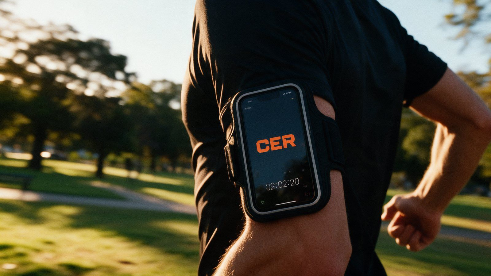
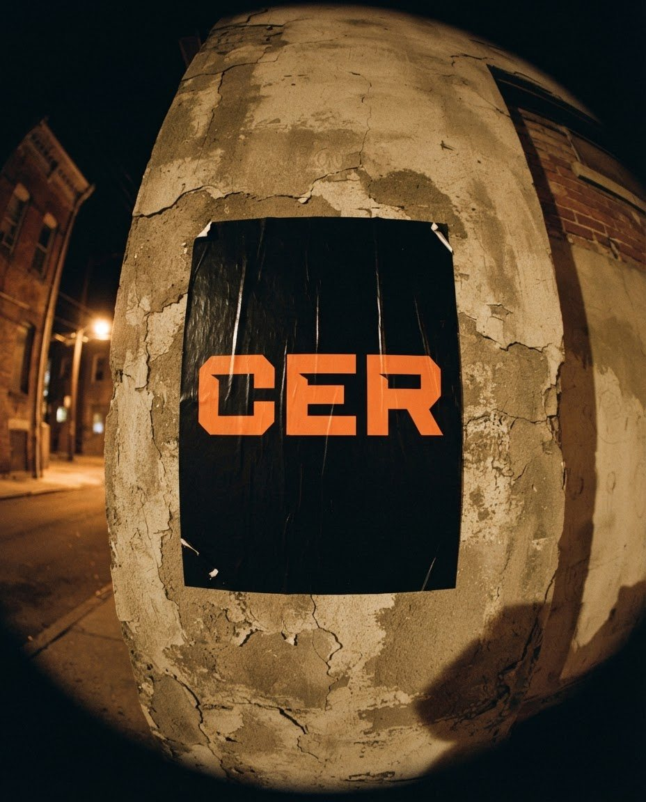

CER
Entrená distinto.
CER es un centro de entrenamiento en Ciudad Evita, con sede propia, actividades al aire libre y seguimiento online. Cada plan se arma a medida, con método y conocimiento, para entrenar fuerte y sentirse bien por mucho tiempo.
La marca tenía que transmitir lo que se vive adentro: profesionalismo, cercanía y energía.
- Sector
- Centro de entrenamiento
- Alcance
- Identidad · Sistema gráfico · Aplicaciones

01 Desafío
Una sala con alma de equipo y una imagen que no lo contaba.
CER tenía algo difícil de mostrar: un entrenamiento pensado al detalle para cada persona, con un profe que domina la movilidad, la fuerza y el rendimiento, y un grupo que se banca la rutina juntos. Pero su imagen no estaba a esa altura: cada pieza salía distinta y la marca se perdía entre tantas otras.


02 Estrategia
Precisión y cercanía.
En CER cada plan parte de un conocimiento profundo del cuerpo: movilidad, fuerza y rendimiento, ajustados a cada persona. Y el profe acompaña todo el camino, dentro y fuera de la clase, de la sala a la largada de una carrera. La idea de marca une las dos cosas. Entrená distinto: con método, a tu medida y con alguien al lado.
Entrenádistinto.
03 Identidad
Una marca con la firmeza de un método.
El logo, de letras anchas y cortes rectos, transmite solidez y precisión: se ve tan profesional como el entrenamiento que representa. El negro manda, el naranja aparece donde hay que mirar, el gris y el blanco ordenan, y el celeste se guarda para los detalles. Shuttleblock Narrow pone los títulos con autoridad; Shuttleblock acompaña en los textos.
EntrenáCorréSumateVolvéEntrená
Entrenamiento personalizado en la sede, al aire libre y online, con acompañamiento en cada paso.
%
Personalizado
Fuertehoy.Fuertesiempre.
04 Aplicación
La marca se pone la ropa de entrenar.
Remeras, musculosas, bolsos, toallas y botellas que acompañan en la sede, en la plaza y en cada carrera. En la calle y en redes, el mismo sistema ordena carteles, carruseles y reels, y llega también a quienes entrenan online.






05 Resultado
Una marca a la altura de lo que pasa adentro.
CER tiene hoy una identidad que cuenta lo que siempre fue: un lugar para entrenar con método, cerca y acompañado. Un sistema simple de usar, para que cada pieza nueva sume a la misma idea.

“CER es lo más hermoso que me pudo pasar.”